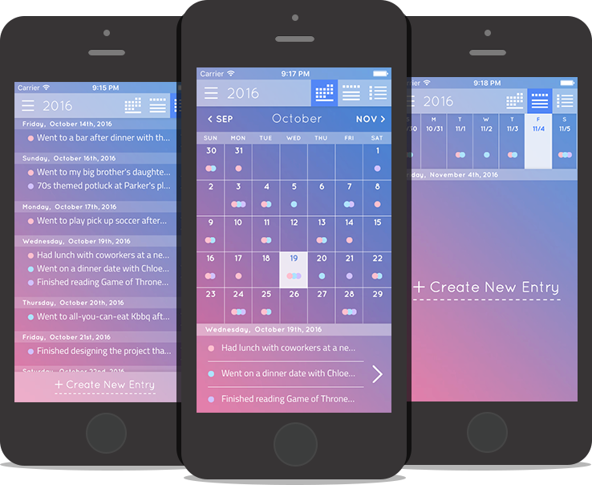
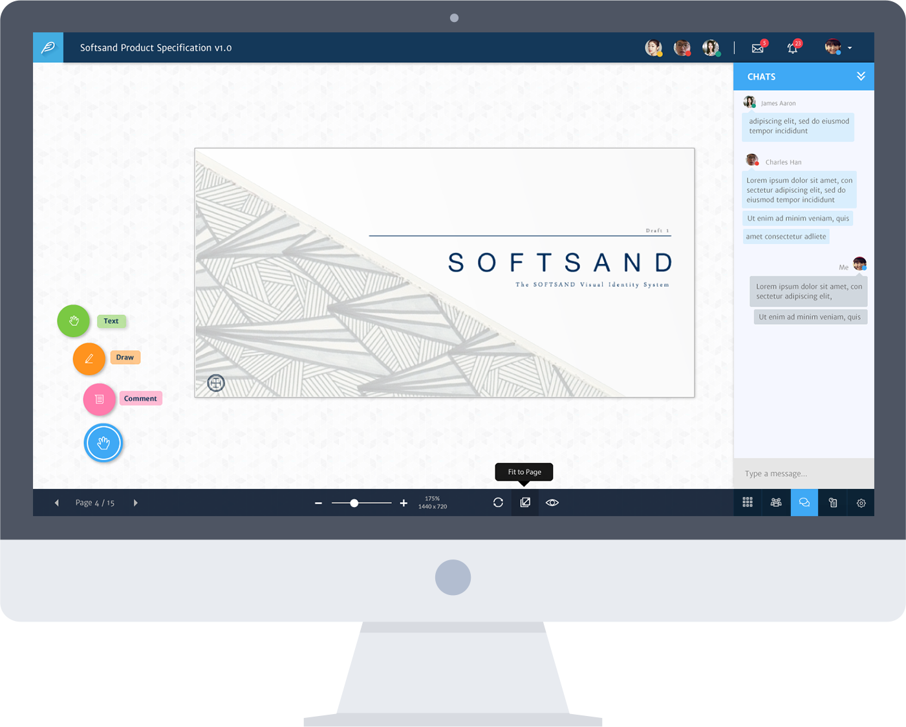
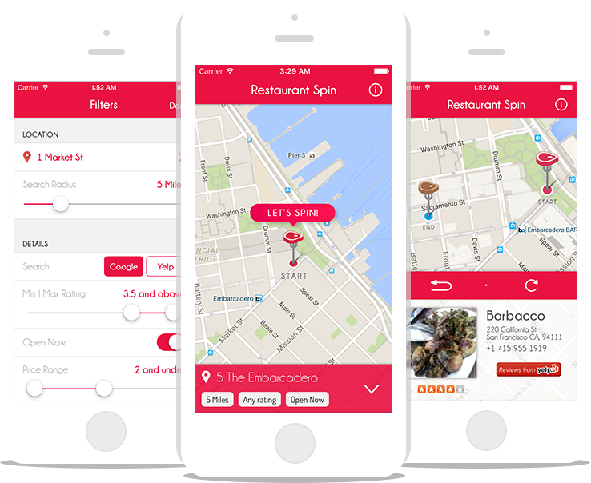
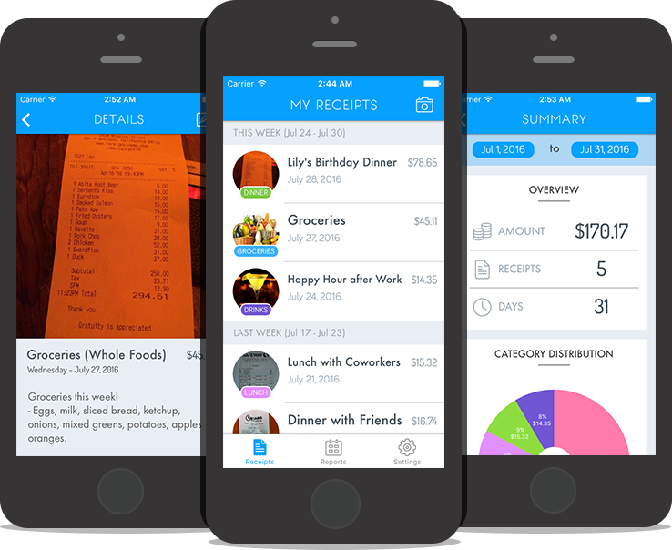
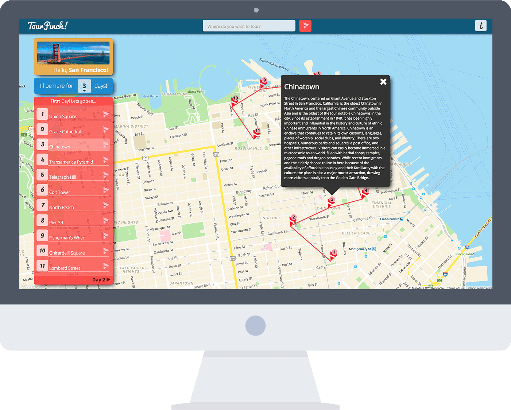
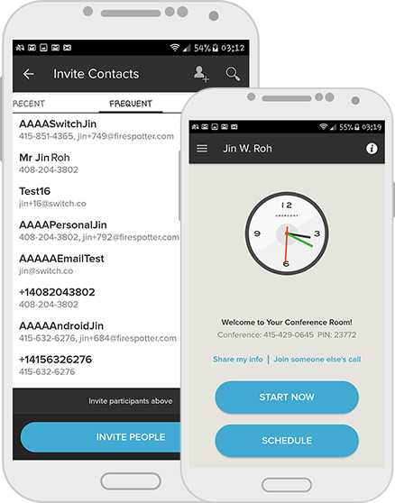
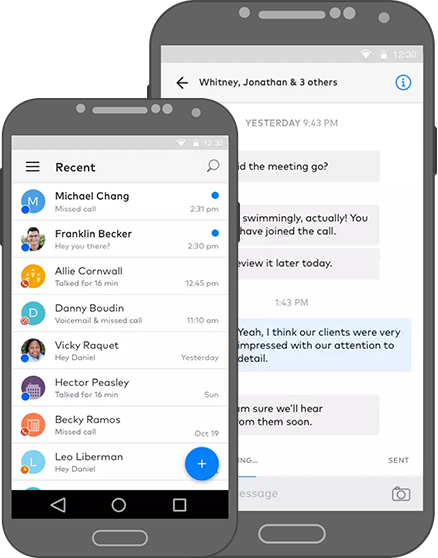

JIN W. ROH
Software Engineer
&
UI⋅UX Designer

PROJECTS (Defunct / Archived)
Personal & Independent Projects

Bullet Diary
iOS (iPhone) Development & UI/UX Design
Objective-C Illustrator (Ai) Photoshop (Ps)
Bullet Diary is a minimalistic, yet practical journaling iPhone application designed to provide a pleasant and effortless experience writing journal entries. Each entry is composed of up to three bullet points that encapsulate key highlights of the day.
This application is now live in the iOS App Store - take a look!


Picomark
Full Stack Development & UI/UX Design
Angular.js Ruby on Rails Sketch
Picomark is collaboration tool to help freelance designers and their respective clients. Freelancers can upload and organize their designs, and then invite clients to share, present, to gather feedback. Real-time collaboration tools such as live drawing and commenting on the design, as well as a chat features are supported.
This project is still under active development (with daily pushes), but I've made considerable progress. Take a peek at
www.picomark.com!

Restaurant Spin
iOS (iPhone) Development & UI/UX Design
Swift 2.0 Illustrator (Ai) Photoshop (Ps)
Restaurant Spin a nifty iPhone application to help users find new restaurants. The application randomly suggests a nearby place to eat according to the number of filters set by the user; the results are searched using the Yelp and Google Places Search API. Filters include price range, average customer rating, search radius, and more!
This application is now live in the iOS App Store - why not give it a spin?

Receipt Snap
iOS (iPhone) Development & UI/UX Design
Swift 2.0 Illustrator (Ai) Photoshop (Ps)
ReceiptSnap is an iPhone application that helps users organize their receipts by taking pictures and saving them instead of managing physical copies. Users can save the photo with relevant tags and details to help categorize and identify for later use. Furthermore, the app can also generate reports that summarize data from a specified timeframe.
This application is now live in the iOS App Store!

TourPinch!
Full Stack Development & UI/UX Design
Node.js Backbone.js MySQL AWS Illustrator (Ai)
TourPinch! (www.tourpinch.com) is a web application that provides a pre-selected, best itinerary for a given destination city to tourists depending on their length of stay. The application pinpoints the 'must-see' points and generates the most efficient tour route to help plan the user's travelling. The application is powered by Node.js and Backbone.js in the backend and frontend, respectively.
Current professional work - Mobile Software Engineer @Dialpad
All apps are publicly available in the app store!

UberConference
Android Development
UberConference is a web conferencing application that prides itself as the "Stress-free conference call" with no required PINs and real time participant updates (knowing who's talking, screensharing, etc).
The android application is an extension of the web app: the mobile app makes it easy to create instant calls with a click and schedule calls by simply selecting contacts and choosing a meeting time. Even features such as screensharing and chats are supported!

Dialpad
Android Development
Dialpad is (in fancy terms) "cloud-based, enterprise business phone solution". In non-fancy wording: Google Voice competitor. By signing up for Dialpad, the user will receive a new 'business phone number' that will ring their devices (mobile or desktop).
The Dialpad Android Application supports awesome features such as: VoIP calling, SMS/MMS (messaging), company directory and contacts management, group calling, and a lot more than I can write in this short paragraph. :)
ABOUT
I build stuff.*
(Currently taking suggestions for a better catchphrase)
Ideation & Creation - the two words summarize my passion in life. I am always fascinated to see a concept that once existed in the abtract world come to life. From the inception of an idea to the actualization of a functional system, I enjoy partaking in the end-to-end process of creating things in the digital world.
My main forte is software engineering, with my formal, 4-year degree in Computer Science (EECS) in UC Berkeley, one of the top engineering schools (shameless self promotion). Combined with a sharp eye for design, engineering and art empowers me with a valuable tool to create beautiful code and design.
When I'm not working on projects or thinking of crazy ideas to make the next Flappy Bird, I enjoy playing pick up soccer, meeting new friends, making awkward small talk at happy hours, and taking long walks (but not necessarily on the beach). I also enjoy backpacking - take a look at my past TRAVELS!
I am currently working as a Mobile Software Engineer at Dialpad! Professionally, I work with Android platform for Dialpad Application. I do iOS (iPhone) development in my free time.
CONTACT
Get in touch!
I'm always looking for a friend, a project partner, or just anyone to grab a drink!